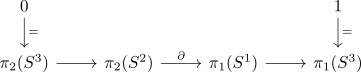

second homotopy group of a 2-sphere
Proposition
Let $S^2$ be the 2-sphere, then the homotopy group
\begin{align*}
\pi_2(S^2) \simeq \mathbb{Z}
\end{align*}
Proof
follows from:
for

where $\partial$ is an isomorphism by sandwhiched by zero object and isomorphism and fundamental group of a circle